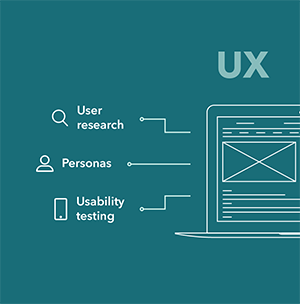
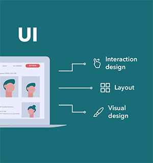
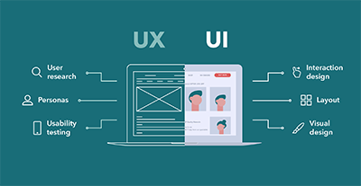

При планировании создания дизайна веб-сайта, или мобильного приложения, вы можете услышать такой термин, как UI/UX дизайн, так давайте разберёмся, что это такое.
В основе UX и UI дизайна лежат базовые требования к интерфейсу:
- Ясная структура — пользователь понимает, что и зачем он делает;
- Лаконичность формы — экран не перегружен обилием деталей;
- Узнаваемость элементов — назначение каждой кнопки или иконки интуитивно понятно;
- Отзывчивость — моментальный отклик элементов на воздействие, человеку понятно, что сейчас происходит, какой процесс запущен;
- Эстетичность — визуальное восприятие продукта должно доставлять удовольствие;
- Минимум усилий — пользователь без заминок решает свои задачи, взаимодействуя с интерфейсом продукта;
- Забота о человеке — у пользователя должно быть право на ошибку и безболезненный способ ее исправить.
Эти понятия, UI/UX дизайн, взаимосвязаны, но между ними есть принципиальная разница.
UX-дизайн.

UX-дизайн (User experience) — «опыт пользователя». Опыт пользователя — это ощущения и эмоции, которые испытывает человек, взаимодействуя с чем-либо.
От простого нажатия на кнопку включения электрочайника до сложного запуска ядерного реактора, требующего предварительной подготовки.
UX-дизайнер,вопреки расхожему мнению, не проектирует пользовательский опыт, но создает то, что может на этот опыт повлиять, учитывая удобство, эргономику, логичность поведения системы и уменьшение количества ошибок.
Другими словами, UX решает, как правильно расположить и обозначить кнопку на чайнике, чтобы легко и быстро его включить, а не вызывать приступ раздражения.
UI-дизайн.

UI дизайн (User Interface) — Пользовательский интерфейс представляет собой графическую структуры приложения.
Он состоит из кнопок, нажимаемых пользователями, текстов, которые они читают, изображений, полей ввода текста и всех остальных элементов, с которыми взаимодействует пользователь.
Кроме того, он включает в себя макет экрана, переходы, анимацию интерфейса и каждое микро-взаимодействие.
Любой визуальный элемент, взаимодействие или анимация должны быть разработаны в процессе UI-дизайна.
Заключение.

UX – это процесс, UI – это инструмент.
Но они объедены одной целью – сделать взаимодействие пользователя с сайтом удобным, логичным, простым и приятным.
И вот почему ВАЖНО, что бы UX и UI дизайнеры работали совместно, после того как UX
дизайнер выполнил работу
по проектированию,
он передает ее UI дизайнеру, который занимается визуальной и интерактивной
реализацией проекта.